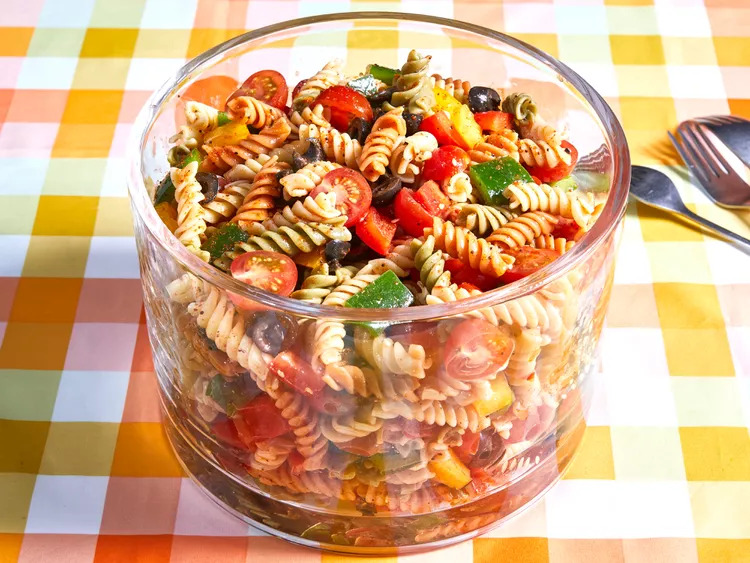

Pasta Salad Recipe

Description
This easy pasta salad recipe comes with convenient
ingredients and colorful vegetables.
Ingredients
- 1 pound tri-colored spiral pasta
- 1 (16 ounce) bottle Italian-style salad dressing
- 6 tablespoons salad seasoning mix
- 2 cups cherry tomatoes, diced
- 1 green bell pepper, chopped
- 1 red bell pepper, diced
- ½ yellow bell pepper, chopped
- 1 (2.25 ounce) can black olives, chopped
Steps
- Gather all ingredients.
- Bring a large pot of lightly salted water to a boil.
- Cook pasta in the boiling water, stirring occasionally, until tender
yet firm to the bite, about 10 to 12 minutes; rinse under cold water
and drain.
- Whisk Italian dressing and salad spice mix together until smooth.
- Combine pasta, tomatoes, bell peppers, and olives in a salad bowl.
- Pour dressing over salad and toss to coat.
- Refrigerate the salad, 8 hours to overnight; Enjoy!